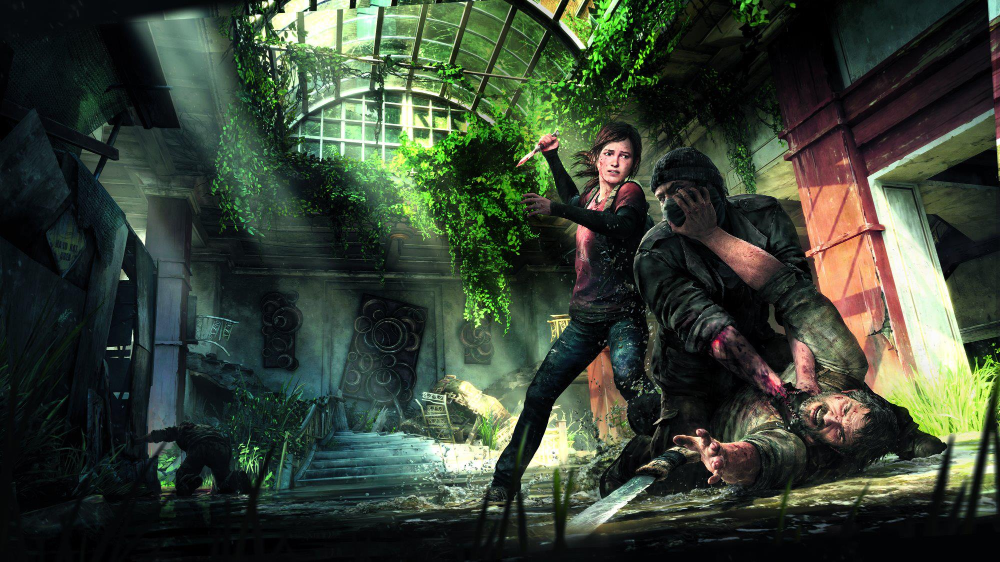
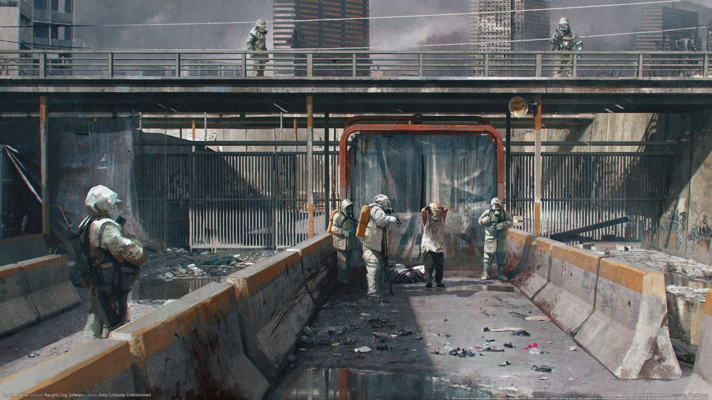
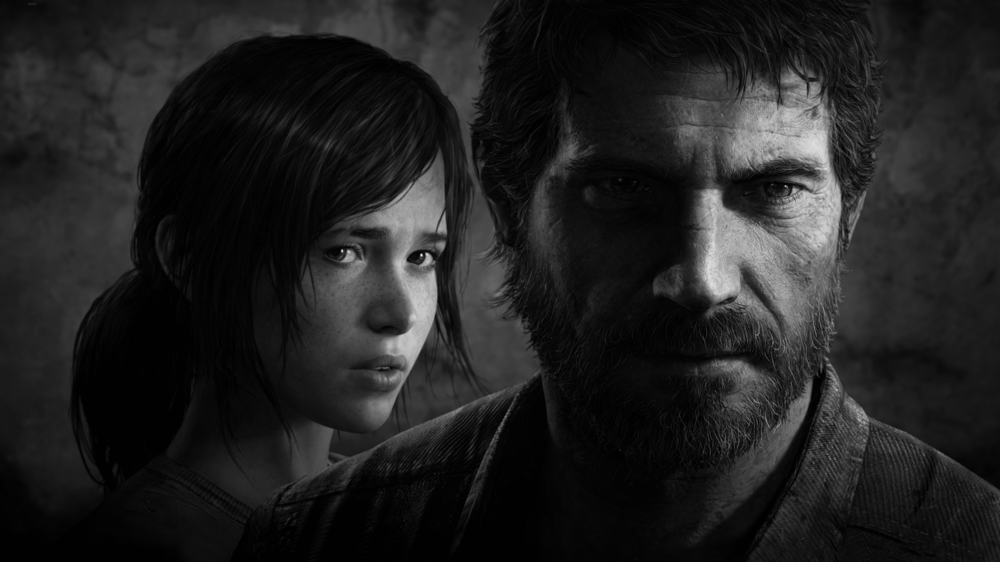
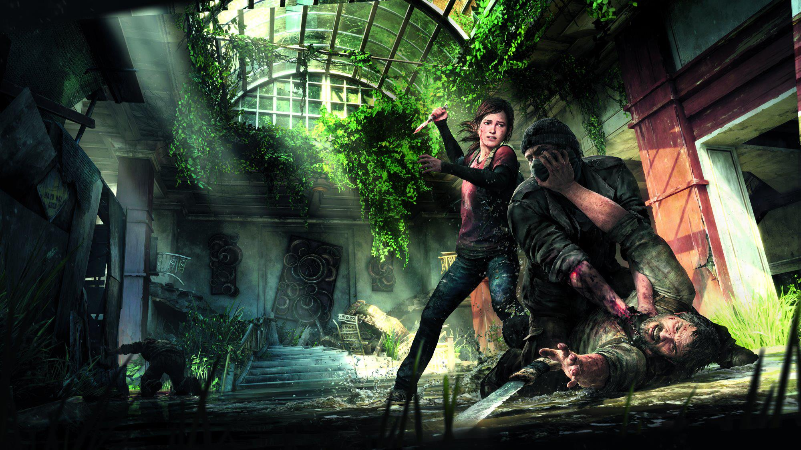
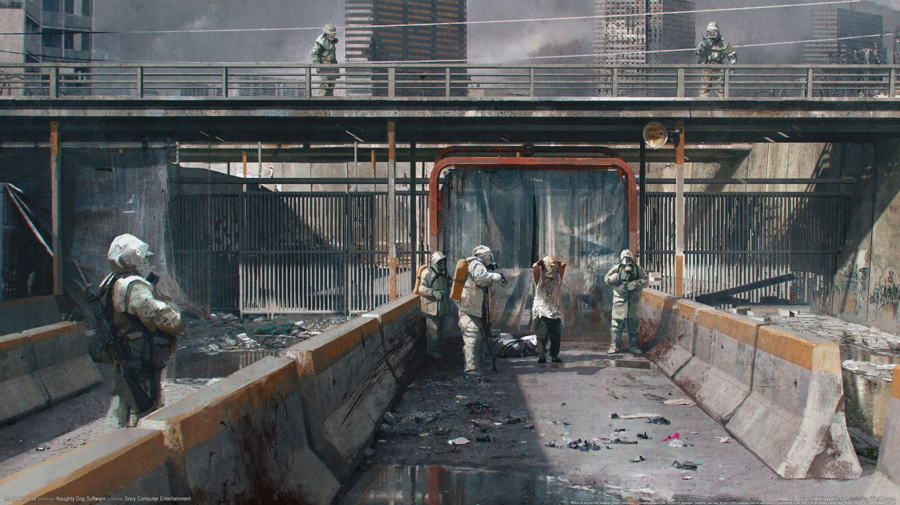
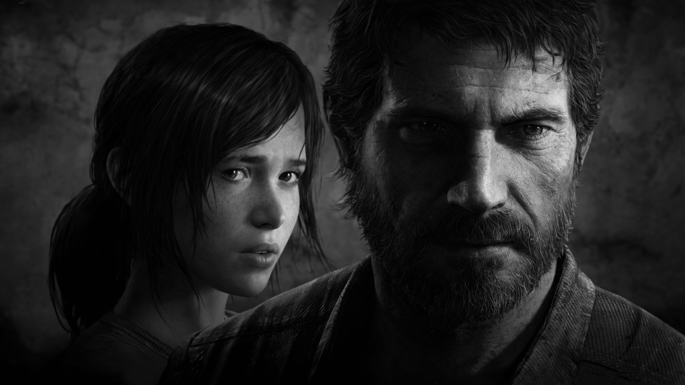

The Last of Us is a 2013 action-adventure game developed by Naughty Dog and published by Sony Computer Entertainment. Players control Joel, a smuggler tasked with escorting a teenage girl, Ellie, across a post-apocalyptic United States. The Last of Us is played from a third-person perspective. Players use firearms and improvised weapons and can use stealth to defend against hostile humans and cannibalistic creatures infected by a mutated fungus. In the online multiplayer mode, up to eight players engage in cooperative and competitive gameplay.